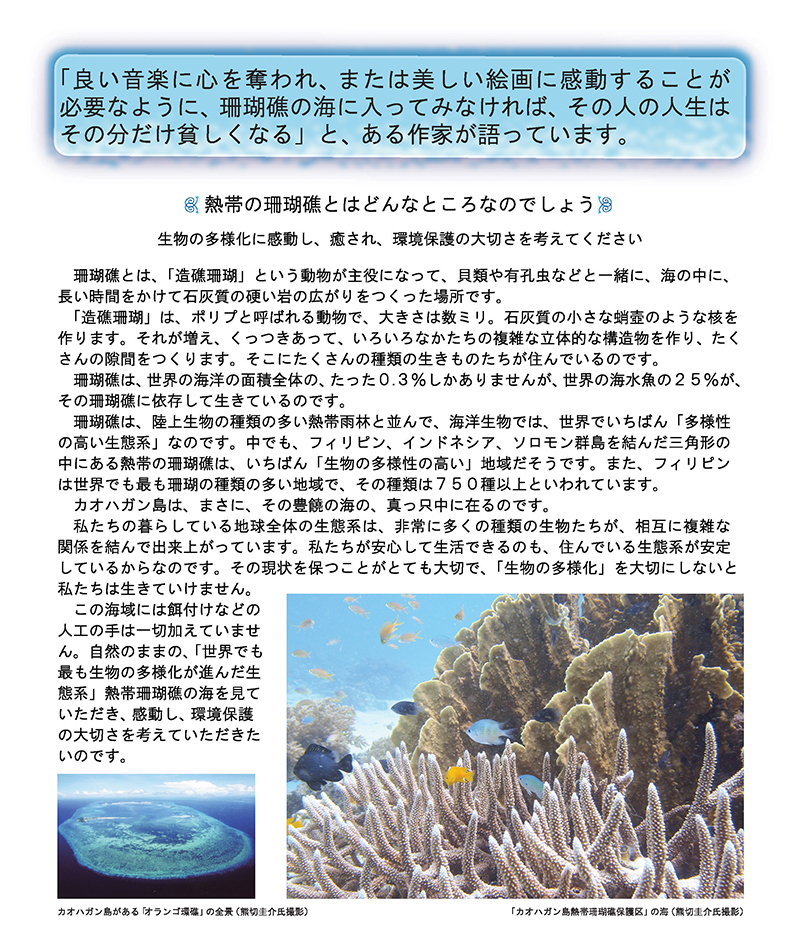

カオハガン島は、世界一、生物の種類の多い海に囲まれています。

澄み切った海洋の自然に囲まれ、その自然とつながって、約6００人の島民たちがしあわせに暮らしている小さな島です。
特産品は、「カオハガン・キルト」と子どもたちの笑顔、そして、豊かな海です。
カオハガン島は、「世界でいちばん生物の種類の多い生態系」に包まれた海なのです。
２００８年の９月から、そのカオハガン島の南側３６万平米の広大な海をブイで囲って、「カオハガン島熱帯珊瑚礁保護区」を創設し、海域の保護を始めています。
それから四年が経過して、保護区の中は、たくさんの珊瑚が成長し、魚や貝やいろいろな種類の海の生きものたちでいっぱいになっています。
そして、そこで育った魚が外にあふれ出して、周囲の海全体が豊かになってきています。
その海域を、細心の注意を払って皆様に公開します。感動をしていただき、環境保護の大切さを考えていただきたいのです。
崎山克彦